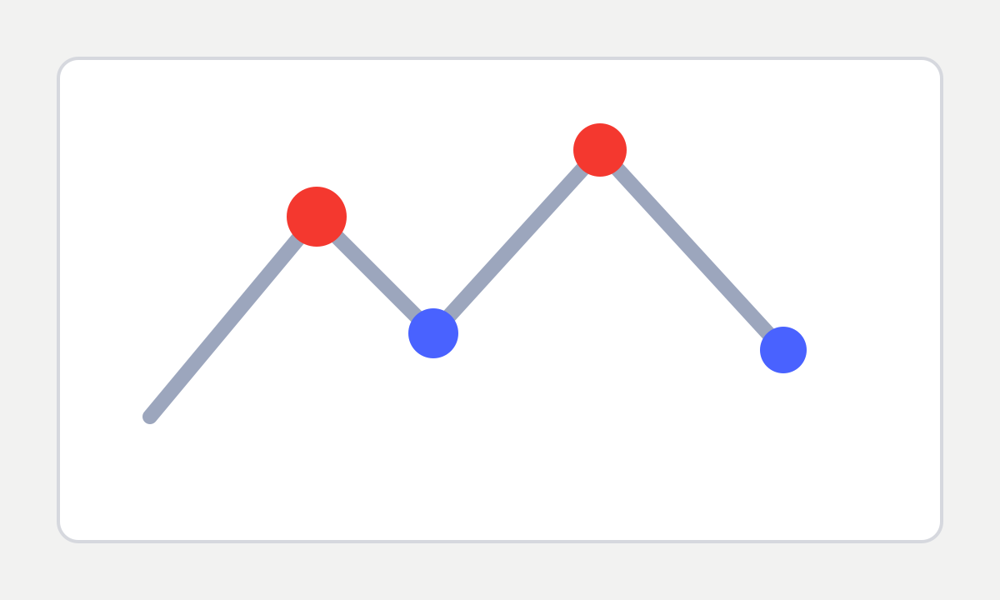

FAQ For Design Studios
Clear answers on scope, commercial models, and execution control.
This FAQ is written for studio founders, design directors, and account leads evaluating engineering and co-manufacturing partners.

Positioning
What we do and what we do not do.
Are you a design studio or design consultancy?
No. We are an engineering-led co-manufacturing execution partner.
Do you rely on one fixed factory?
No. We use a managed Dongguan-centered partner factory network, matched by process, volume, and risk profile.
Do you provide front-end design services?
No. We do not provide concept design, branding, or user-facing creative direction.
What is your core role in a studio-led project?
We convert approved concept packages into manufacturable engineering, validation, and production transfer outcomes.
Can you work white-label under our studio?
Yes. White-label collaboration is the default in studio direct-order projects.
How do you protect our client relationship?
Through non-circumvention and communication rules that keep studio account ownership intact.
What project files should we share first?
Concept intent, key geometry/CAD references, usage constraints, target timeline, and risk concerns.
Can we engage only one stage?
Yes. You can scope us for feasibility, DFM, validation, or pilot transfer independently.
Do you support remote collaboration?
Yes. We run remote cadence with structured updates and on-site factory coordination when needed.
Commercial Models
How payment and ownership structure works.
What is the default model?
Design studio direct order. Your studio leads client communication while we execute engineering and manufacturing work.
When do we use tripartite collaboration?
When project risk, tooling scope, or certification complexity requires shared governance among studio, brand, and Geniotek.
Do you support referral commission cooperation?
Yes. We support referral mode for lead introduction partnerships with defined attribution and settlement rules.
How are scope changes handled?
Through written change orders with impact visibility on timeline, cost, and acceptance criteria.
Delivery + Risk
How execution quality is controlled.
What validation framework do you use?
We run stage-gated validation through EVT, DVT, and PVT based on project complexity.
How do you handle IP-sensitive files with suppliers?
Only minimum necessary data is shared with role-based controls and traceable communication paths.
Can you support certification-oriented programs?
Yes. Certification constraints are integrated into engineering and production planning from early stages.
What happens when pilot issues appear?
Issues enter a tracked escalation loop with owner assignment, corrective action, and closure criteria before ramp.
Need A Direct Answer For Your Current Project?
Send your studio scenario and we will respond with a practical recommendation.